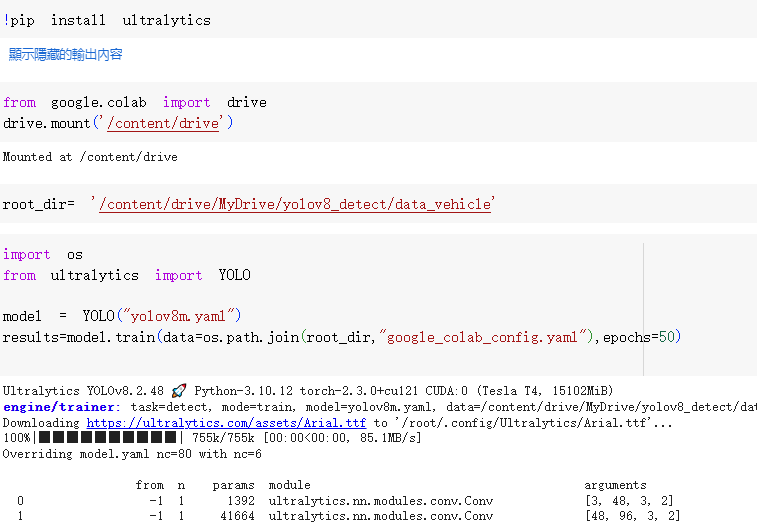

Project 2
Background: 使用yoloV8影像辨識偵測車輛並使用opencv繪製出框線
Data Source:
vehicle-dataset-for-yoloModel Selection
Model : 影像辨識 - YOLOV8
Results
影像辨識 :
車輛影像辨識 繪製框線
Code Demo
Conclusion 探討模型的技術
YOLOV8:
根據Ultralytics的官網說了以下幾個特點
模型:
骨幹網路（backbone network）用於從輸入圖像中提取低級和高級特徵。
這些特徵被送入頸部架構（neck architecture），進一步處理以強化特徵，提升物體檢測的效果。
無錨檢測 （Anchor Free Detection）：
傳統的檢測頭，通常使用錨點來預設各種尺度和縱橫比的框架，
並將這些錨點與特徵圖上的每個位置配對，以預測物體的存在和位置。
無錨分割Ultralytics頭，則是透過分割的方式來檢測物體，並直接在特徵圖的每個位置上預測物體的中心點、寬度和高度。